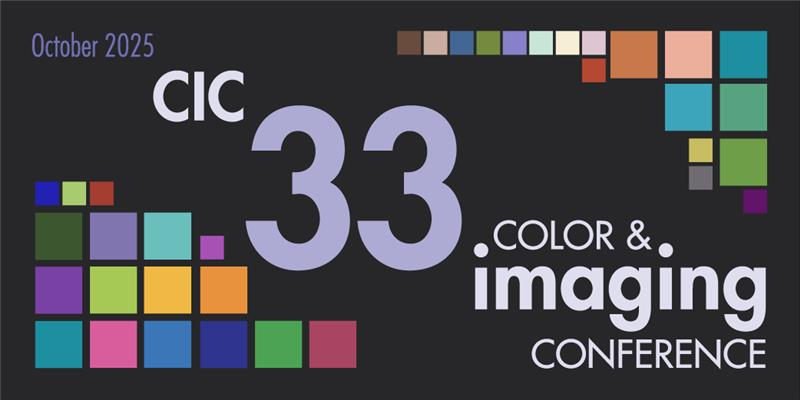

iccDEV IIS Server
This local sample site adopts the preserved ICC website chrome while staying focused on the IIS
proof: iccIisIsapi.dll loads IccProfLib2.dll and IccXML2.dll
inside the IIS worker process and exposes three simple request modes.
Current deployment
What this site proves
- The site root serves a default document instead of returning HTTP 403.14.
- The native ISAPI handler is callable directly from the browser or from `curl.exe`.
- The install folder contains the transitive runtime DLLs required by IIS.
Navigation
Quick path
- Use this page for the overview and the primary live call.
- Use Endpoint Console for repeated endpoint testing.
- Use Integration Guide for IIS setup, handler mapping, and deployment checks.
Live request controls
These buttons call the IIS-hosted DLL directly from the browser.
Live response
Choose a request above to fetch live output from the IIS ISAPI sample.

Reference ICC visual language
The site shell now borrows the preserved ICC logos, banners, menu graphics, and page framing from the
reference snapshot in E:\codex\iis. That keeps the local IIS sample visually consistent
with the ICC web presence while leaving the endpoint behavior and deployment proof intact.
Available routes
- `/`
- Default document and landing page.
- `/iccIisIsapi.dll`
- Version summary and XML byte count.
- `?mode=health`
- Plain-text readiness check.
- `?format=xml`
- Minimal ICC XML response.
Operator note
The IIS worker process must be able to resolve IccProfLib2.dll,
IccXML2.dll, and the transitive runtime DLLs copied into this site folder.
If you need the deployment details or want to rebind a site to the install tree, use Integration Guide.